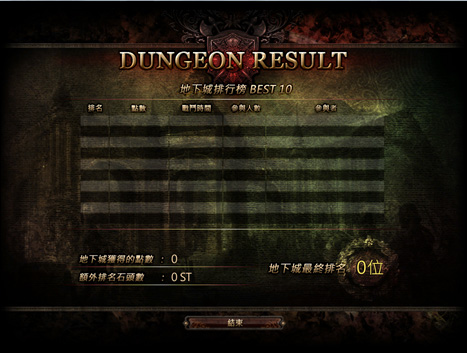

PVP與PVE
PK說明
多樣的PK系統，是戰亂II最有特色的地方，在一般地區即可隨時展開PK對決，迅速體驗遊戲的刺激快感。另外，戰亂II也為玩家設計自由武鬥場和懲罰機制，讓玩家有可以自由對決的場所，同時也能避免某些玩家任意殺人。一.死亡懲罰
在PK中不幸死亡的玩家，會隨機掉落1~10%的經驗值，另外也有機率掉落裝備。二.殺人懲罰
為了保護玩家權益，有些地區有PK上的限制，隨意殺害其它玩家的人會受到一定的懲罰，除了降低善惡值之外，24小時內也會被城鎮門口的警衛追殺。三.正當防衛
為保護玩家而設定的系統，正當防衛的有效時間為被對方攻擊後的30秒內。面對胡亂攻擊他人的玩家，系統自動判定是否為正當防衛，若是正當防衛的玩家，反擊則不會受到殺人懲罰。四.PK場所介紹
戰亂的PK場所分為一般玩家PK、小型武鬥場PK、大型玩家對戰模式 《羅馬競技場 ( PVP系統 ) 》 、攻城戰等類別。五.村莊(安全地區)
每個村莊內皆屬安全地區，無法進行PK。當怪物被引進村莊時，會被守護城鎮的衛兵殺害。六.一般地區
一般地區(紅色)是可以PK的區域，殺害別的玩家邪惡值會增加。七.地下城區域
地下城是可以PK的區域，顯示為紅色(一般地區)。八.自由武鬥場
每個地圖皆設立了自由武鬥場，在這裡玩家可以正大光明的決鬥，即使擊殺玩家也不會受到懲罰，所以可以在此盡情地享受PVP的快感。九.攻城戰(PVP)區域
在城堡領地中全部都是可PK的區域，但在此區域內殺人(有對城堡宣戰的玩家)將不會增加邪惡值，死亡也不會掉落經驗、道具。PVE競技場

- 競技場管理員可在各村莊內查看與報名
- 點擊NPC跳出對話視窗，可報名PvP∕PvE競技場對戰，並有對戰規則說明。
- 點擊「競技場進入申請」選項，即可完成申請。
- 開放申請時間:
(1)PVP 每日開放場次：00 點、04 點、08 點、12 點、16 點、20 點、24 點
(2)PVE（中級）每日開放場次：01 點、05 點、09 點、13 點、17 點、21 點
(3)PVE（高級）每日開放場次：02 點、06 點、10 點、14 點、18 點、22 點
(4)古羅馬佔領戰：03 點、07 點、19 點、23 點 - PVE競技場是在指定的時間內申請參加，讓角色召喚到競技場內，並隨機分為2組進行比賽，以隊為單位清理怪物的速度分出勝負的活動。
一.PVE競技場入場申請方式
- 入場需在指定申請時間內向NPC提出申請報名。
- 可以根據村莊詳細地圖尋找NPC的位置。
二.PVE競技場入場申請
- 每場競技(場內入場人數)人數最多為30名，最少6名。
- 根據申請先後順序進行，達到場內最多人數後將無法申請。
- 入場申請人員少於場內最少之規定人數時，將取消競技。
- 入場申請後角色登出、斷線或離開遊戲，入場申請將被取消。
- 開設角色個人商店、死亡、或進行個人交易時，將無法進入競技場。

三.PVE的進行
- 完成競技場入場申請的角色，將會在競技開始時移動到等待室內。
- 隨機分為 紅/藍 兩隊。
- 競技場中同隊之間只能使用一般聊天模式。
- 無法與沒有進入到競技場的角色及其他隊伍的角色聊天。
- 可於等待室裡的商人NPC購買競技場物品。
- 比賽開始後，系統將會召喚第一輪怪物。
- 擊殺怪物後有機會獲得隨機的競技場魔法。
- 可點擊使用(快捷鍵5,6,7,8,9)相關的法術加強己方或削弱怪物。
- 競技場競技中，即使角色死亡也不會受到經驗值下降、裝備損失等死亡處罰。
- 勝出比賽的隊伍系統將會給予獎勵回合，獲得擊殺稀有怪物的機會。

[獲得魔法及顯示兩隊進度]
PVP競技場
- 競技場管理員可在各村莊內查看與報名
- 點擊NPC跳出對話視窗，可報名PVP∕PVE競技場對戰，並有對戰規則說明。
- 點擊「競技場進入申請」選項，即可完成申請。
- 開放申請時間:
(1)PVP 每日開放場次：00 點、04 點、08 點、12 點、16 點、20 點、24 點
(2)PVE（中級）每日開放場次：01 點、05 點、09 點、13 點、17 點、21 點
(3)PVE（高級）每日開放場次：02 點、06 點、10 點、14 點、18 點、22 點
(4)古羅馬佔領戰：03 點、07 點、19 點、23 點 - 每場競技(場內入場人數)人數最多為50名，最少6名。
- 申請完成後，左下角會出現申請成功的提示訊息。
一.競技場規則
- 成功完成申請的玩家，競技開始時，將隨機分組並傳送至紅隊與藍隊各自的等候室，等待20秒後將正式開始比賽。
- 如果是在組隊的狀態下申請進入PVP競技場，則同隊隊員將會分配至相同的隊伍中。
- PVP 開始，玩家被隨機分配到各隊的休息室。
- 在休息室內可向NPC ‹競技場商人› 薩利諾斯，購買補給商品。
- 申請參加競技後，開設個人商店、與玩家交易時、或是角色死亡的時候，皆不會被傳送至競技場。
- 申請參加競技後，將無法進入地下城。
- 競技場申請後若是重登角色，就必須要再重新申請參加競技。
- 若是在進入競技場前身上擁有BUFF，在競技場開始後身上會繼續保有這些BUFF。
二.競技場圖示說明
- 競技場比賽時間顯示和圓點顯示進度
(1)比賽時間倒數
(2)戰爭點數
(3)紅隊與藍隊的比賽狀況
(4)玩家目前的排名 - 排行符號
↓
 全隊排行No.1的符號。
全隊排行No.1的符號。
全隊排行No.2的符號。
全隊排行No.3的符號。
全隊排行No.4及 No.5的符號。
在以上排名之外其他名次的符號

三.比賽結算
- 依各玩家角色職業戰爭點數總和決定勝負。
- 比較各玩家角色職業的個人排名。
- 競技過程中，若中途離開，積分將不予計算。
- 遊戲結束後，將顯示戰鬥成績、競技場點數、玩家排行、獲得獎勵等資訊。
- 無論勝敗，皆會給參與競技場的徽章。
四.戰爭點數
- 戰爭點數是根據對戰中的表現而決定獲取數量。
- 另外公會成員的戰爭點數總和也會影響公會排名。
- 比賽結束15分鐘後會立即更新公會看板上的積分。
- 根據不同職業，給予某些不同的特殊獎勵。
- 差異獎勵：回合結束時，若紅隊與藍隊的總得分相差超過500點，將贈予落後隊伍的玩家Buff獎勵。
| 3勝 | 戰爭點數50 |
|---|---|
| 2勝 | 戰爭點數30 |
| 1勝 | 戰爭點數10 |
回合勝敗獎勵
| No.1 | 戰爭點數300 |
|---|---|
| No.2 | 戰爭點數200 |
| No.3 | 戰爭點數150 |
| No.4 | 戰爭點數100 |
| No.5 | 戰爭點數50 |
個人排名獎勵
| 人類牧師 | 解除同隊伍玩家的異常狀態，將可以額外獲得50積分。(解毒術除外) |
|---|---|
| 人類、精靈騎士 | 跟其他職業相比，擊殺玩家可獲得雙倍積分。 |
職業特殊獎勵
| 相差500點 | 團結（一）AC+6，MR+10 |
|---|---|
| 相差1000點 | 團結（二）AC+12，MR+20 |
| 相差1500點 | 團結（三）AC+18，MR+30 |
五.競技場注意事項
- 比賽中不能使用瞬間移動卷軸、回城卷軸。
- 競技過程中若重新連線，將無法得到競賽獎勵。
- 競技場中不會顯示對方隊伍的名稱。
- 競技中只能與隊友使用一般聊天頻道。(聊天內容不能使用特殊符號、不雅文字)
- 在進入羅馬競技場後，無法和其他隊伍的成員聊天。
- 在羅馬競技場中，死亡不會掉落任何裝備和經驗值。
地下城挑戰

副本地下城
- 達到一定等級便可挑戰副本地下城
- 副本地下城劃分了許多不同的區域，玩家必須於時限內擊殺該區域的怪物，方能進入下一個區域，相對於一般的地下城來說來說，副本地下城的難度會更高，給予玩家的獎勵也將更豐厚。
- 此地下城如進入後，勿中途退出或是尚未進行就退出，將會無法再進入。
- 每一個地下城進入到結束後都會有重置時間，中途結束或未結束退出，都需要等重置時間結束後才可再次進入。
- 每一個副本都有不同的冷卻時間，越後面時間越長，當然也可以確認一下入場時間，即可知道是否可進入。
- 進入地下城後，會倒數開始秒數，也可以點【立即開始】馬上挑戰。
- 完成副本後後會有立即移動按鈕，可移動到排名介面。
- 結算後可獲得通關獎勵(不會獲得石頭點卷)。 
點擊可確認冷卻時間
讀秒或開始
排行榜
地監介紹
地監型怪物難度較野外怪物高，且多半屬於主動型怪物，而相對的強大的怪物會有較豐厚的機會獲得寶物，因此進入地監前請做好萬全的準備。一.墨西拿港：
- 燈塔地下城(20級以下)：NPC位於墨西拿港，座標(922，688)
- 修行地下城(30級以下)：NPC位於墨西拿港，座標(913，749)

二.吉普賽村：
- 修行地下城(30級以下)：NPC位於吉普賽村，座標(134，39)
- 暗黑神殿(無等級限制)：傳送點位於大墓地，座標(440，230)
- 被遺忘的國王之城：傳送點位於大墓地，座標(251，443)
- 地下墓穴(48級以上)：NPC位於大墓地，座標(451，390)
暗黑神殿深處潛伏著「暴戰軍團長」死亡騎士
國王地監內潛藏著「阿克貝斯軍團長」巫妖王
地下墓穴是凶狠的「地獄軍團」的棲息地
三.查斯泰爾：
- 沉沒之城遺址(無等級限制)：傳送點位於查斯泰爾，座標(217，148)
沉沒之城潛藏著超強魔怪「靈怪」「亡靈巫師」
四.特羅圖斯：
- 賢者之塔(無等級限制)：傳送點位於特羅圖斯，座標(165，778)
- 廢棄的舊礦坑(45級以上)：傳送點位於特羅圖斯，座標(558，67)
廢棄的舊礦坑隸屬「地獄軍團」，潛伏著強大魔怪
五.阿卡洛：
- 被破壞的阿卡洛城堡(55級以上)：NPC位於阿卡洛城，座標(387，269)
最強魔物「火龍沙特路斯」潛藏於副本中
彩票系統
彩票系統是一種輕鬆賺錢的博弈方式，有機會以小博大，賺入更多 CP！《彩票系統》每天固定時間會開獎一次，押注的人更多，獎勵金額就越高。彩票系統快捷
- 羅馬競技場(PVP)1.第一名到第四名中，以戰鬥結果的尾數積分做為順序號碼(如下圖，號碼為1438)
- 《彩票系統》無等級限制，每天開放時間為 12 點、16 點、20 點、24 點。
- 四位數號碼中玩家可選擇的只有前 3 位，第 4 位元號碼是系統隨機選定。
- 購買一次《彩票》號碼需消耗 10,000 CP。
- 因參加人數不足而被取消或彩券銷售量不足 100 張時，已購買的彩券金額將由系統退回。
- 中獎方式說明:
第1名:4個數字全中
第2名:首3個數字全中及最後的數字為1或9
第3名:尾3個數字全中
第4名:尾2位數全中
第5名:中最後1位數字全中 - 如本次沒有玩家得獎，獎勵將會累積於下一次
- 玩家不能指定購買第4個號碼，號碼將會由系統隨機選擇
- 如比賽開始或全部號碼售完，將不能進行購買彩票
- 如伺服器中彩票購買不足100張或比賽取消，彩票將退款處理
介面中號碼為[樂透彩票1438]
| 獎項 | 獎勵金額 |
|---|---|
| 1等(四個號碼均中獎) | (總獎勵-(2w*5等獎中獎人數))*60%/1等獎中獎人數 |
| 2等(前三個號碼全中及最後的數字為1或9) | (總獎勵-(2w*5等獎中獎人數))*10%/2等獎中獎人數 |
| 3等(中後三個號碼) | (總獎勵-(2w*5等獎中獎人數))*9%/3等獎中獎人數 |
| 4等(中後兩個號碼) | (總獎勵-(2w*5等獎中獎人數))*21%/4等獎中獎人數 |
| 5等(中最後一個號碼) | 2w金幣 |